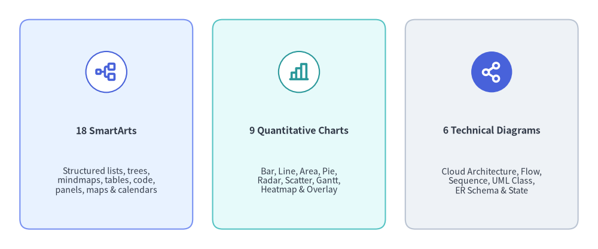
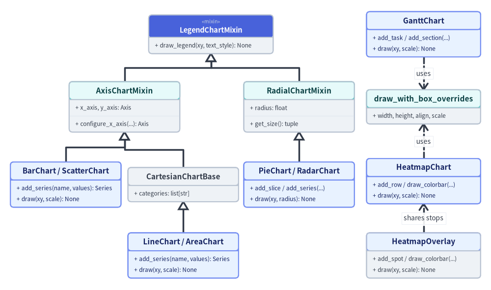
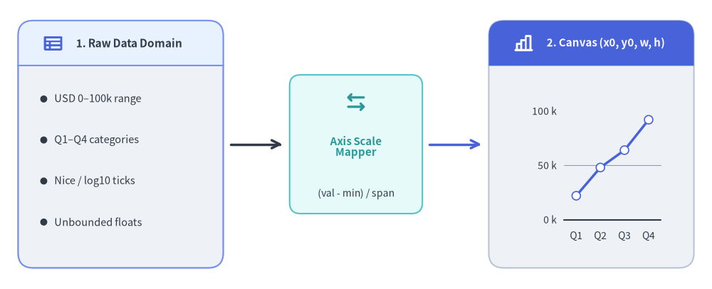

SmartArts, Charts & Diagrams Subsystems
As architectural diagrams and executive dashboards grow, hand-calculating every box margin, legend swatch, and orthogonal connector from low-level primitives becomes error-prone. Drawlib solves this through three stateful high-level component subsystems—SmartArts (18), Quantitative Charts (10), and Technical Diagrams (6)—that compile structured domain models directly onto the shared vector canvas.

Source Code
from drawlib.canvas import save, setup
from drawlib.icons import phosphor
from drawlib.smartarts import CardList
from drawlib.styles import Colors, Styles
setup(width=120, height=50)
trio = CardList(
style=Styles.Neutral.patch(shape_r=2.0),
text_style=Styles.DarkBold.patch(text_size=11.5),
description_style=Styles.Dark.patch(text_size=10.2),
badge_shape="circle",
badge_style=Styles.White.patch(shape_line_color=Colors.Primary),
icon_style=Styles.PrimaryBold,
direction="horizontal",
spacing=4.0,
show_arrows=False,
)
trio.add(
"18 SmartArts",
"Structured lists, trees,\nmindmaps, tables, code,\npanels, maps & calendars",
icon=phosphor.tree_structure,
style=Styles.PrimaryNeutral.patch(shape_r=2.0),
)
trio.add(
"10 Quantitative Charts",
"Bar, Box, Line, Area,\nPie, Radar, Scatter,\nGantt, Heatmap & Overlay",
icon=phosphor.chart_bar,
style=Styles.SecondaryNeutral.patch(shape_r=2.0),
badge_style=Styles.White.patch(shape_line_color=Colors.Secondary),
icon_style=Styles.SecondaryBold,
)
trio.add(
"6 Technical Diagrams",
"Cloud Architecture, Flow,\nSequence, UML Class,\nER Schema & State",
icon=phosphor.share_network,
style=Styles.Neutral.patch(shape_r=2.0),
badge_style=Styles.PrimaryFlat,
icon_style=Styles.WhiteBold,
)
trio.draw(xy=(4.0, 4.0), width=112.0, height=42.0)
save()
1. Concept: Stateful 4-Phase Lifecycle & Coordinate Anchors
All high-level components follow a unified 4-phase stateful lifecycle (1. Instantiate -> 2. Register via .add() -> 3. Mutate State (Optional) -> 4. Render via .draw()):
from drawlib.smartarts import ChevronProcess
from drawlib.styles import Styles
cp = ChevronProcess(
style=Styles.Neutral,
text_style=Styles.DarkBold.patch(text_size=11.0),
description_style=Styles.Muted.patch(text_size=10.0),
spacing=1.5,
flat_left_end=True,
)
cp.add("1. Plan", description="Requirements")
cp.add("2. Design", description="Architecture")
cp.add("3. Build", description="Implementation", style=Styles.PrimaryNeutral)
cp.add(
"4. Verify",
description="Grid Review",
style=Styles.PrimaryFlat,
text_style=Styles.WhiteBold.patch(text_size=11.0),
description_style=Styles.White.patch(text_size=10.0),
)
cp.draw(xy=(10.0, 20.0), width=100.0, height=14.0)
Every registered item, series, or node exposes layout-preserving visibility (elem.show = False)—and charts additionally expose partial spatial rendering (draw_ratio, draw_direction)—allowing progressive builds in Animation & Slide Engines without shifting bounding boxes or axis scales.
Coordinate Anchor Conventions Across Subsystems
Unlike low-level primitives (which always center on (cx, cy)), high-level components adopt natural geometric anchors suited to their flow direction:
| Default Anchor | Components & Containers | Growth / Coordinate Semantics |
|---|---|---|
Bottom-Left (x0, y0) |
SmartArts: BoxList, CardList, ChevronProcess, DayCalendar, WeekCalendar, MonthCalendar, GeoMap, GridLayout, KpiCards (KpiCard), Panel, Pyramid, RoadmapCharts: All 10 chart classes ( align="bottom_left" default; "center" supported)Diagrams: All 6 d.draw(xy=...) containers & NodeGroup |
Bounding box extends rightward (+x) and upward (+y) across [x0, x0 + w] × [y0, y0 + h]. (Individual nodes inside a Diagram use local Center (cx, cy)). |
Top-Left (x0, y1) |
SmartArts: Table, SourceCode (align="top_left" default; "bottom_left" & "center" supported), TreeNode, BulletPoints |
Starts at top-left (x0, y1) and flows rightward (+x) and downward (-y) as rows or tree branches accumulate. |
Center (cx, cy) |
SmartArts: MindMapNode (fixed root center), Cycle (align="center" default; "bottom_left" supported) |
Expands radially or along 4 cardinal branches ("top", "bottom", "left", "right") around (cx, cy). |
2. Positioning: Component Subsystem Breakdown
2.1. drawlib.smartarts — 18 Structured Visual Components
drawlib.smartarts lazily exports 18 primary visual components (plus KpiCard alias, 12 mutable *Item / SourceCodeStyles models, and sourcecode / get_source_code_styles helpers):
- Process, Lists & Matrices:
ChevronProcess,BoxList,CardList(vertical/horizontal cards with badges and optional->arrows),BulletPoints,GridLayout(row/column spanning matrix +draw_flexible()),Pyramid, andRoadmap(vertical/horizontal milestone timelines). - Hierarchies & Cycles:
TreeNode(orthogonal recursive file/org trees),MindMapNode(4-way orthogonal branching along"top","bottom","left","right"), andCycle(circular orbit +CycleCenterhub). - Frames, Metrics & Schedules:
Panel("filled","underline","floating","window"headers withget_content_box()),KpiCards(KpiCard),Table, and schedule calendars (MonthCalendar,WeekCalendar,DayCalendar). - Code & Spatial Vector Engines:
SourceCode(stateless Pygments tokenizer rendering vector syntax-highlighted tokens with CJK font auto-selection) andGeoMap(GeoJSON vector map engine forWorld,Countries, andCitieswithlonlat_to_xy()).
2.2. drawlib.charts — 10 Chart Classes Across 9 Submodules
Organized into 9 submodules (bar, box, line, area, pie, radar, scatter, gantt, heatmap), drawlib.charts follows a Triad Architecture separating Container/Builder, Data Models (Series, BoxStats, Slice, Point, Task, Row, Cell, Spot), and Procedural Renderers (_renderer.py), with presence-based styling (Style | None = None omits optional grids, labels, or backgrounds cleanly):

Source Code
from drawlib.canvas import save, setup
from drawlib.diagrams.class_diagram import ClassDiagram, ClassNode
from drawlib.fonts import FontRoboto, FontSourceCode
from drawlib.styles import Colors, Styles
setup(width=142, height=84)
cd = ClassDiagram(
node_style=Styles.Neutral.patch(text_font=FontSourceCode.ROBOTO_MONO, text_size=10.0),
header_style=Styles.PrimaryNeutral.patch(text_font=FontRoboto.ROBOTO_BOLD, text_size=10.5),
edge_style=Styles.DarkBold,
edge_text_style=Styles.Dark.patch(text_size=10.0),
margin=2.0,
)
# Root Mixin (Centered over Axis & Radial branches)
legend_mixin = cd.add(
ClassNode(
"LegendChartMixin",
stereotype="mixin",
width=36.0,
row_height=3.2,
style=Styles.Neutral,
header_style=Styles.PrimaryFlat.patch(text_color=Colors.White),
).add_method("draw_legend", "xy, text_style", "None"),
xy=(61.0, 73.5),
)
# Second-Tier Mixins
axis_mixin = cd.add(
ClassNode(
"AxisChartMixin",
width=32.0,
row_height=3.2,
style=Styles.Neutral,
header_style=Styles.SecondaryNeutral,
)
.add_attribute("x_axis, y_axis", "Axis")
.add_method("configure_x_axis", "...", "Axis"),
xy=(36.0, 52.5),
)
radial_mixin = cd.add(
ClassNode(
"RadialChartMixin",
width=32.0,
row_height=3.2,
style=Styles.Neutral,
header_style=Styles.SecondaryNeutral,
)
.add_attribute("radius", "float")
.add_method("get_size", "", "tuple"),
xy=(86.5, 52.5),
)
# Third-Tier Branches (Col A: Bar/Box/Scatter, Col B: CartesianChartBase, Col C: Pie/Radar)
bar_scatter = cd.add(
ClassNode("Bar / Box / ScatterChart", width=33.5, row_height=3.2, style=Styles.PrimaryNeutral)
.add_method("add_series", "name, data", "Series")
.add_method("draw", "xy, scale", "None"),
xy=(18.5, 30.0),
)
cartesian_base = cd.add(
ClassNode("CartesianChartBase", width=32.0, row_height=3.2, style=Styles.Neutral, header_style=Styles.Neutral)
.add_attribute("categories", "list[str]"),
xy=(53.0, 30.0),
)
radial_charts = cd.add(
ClassNode("PieChart / RadarChart", width=32.0, row_height=3.2, style=Styles.PrimaryNeutral)
.add_method("add_slice / add_series", "...", "")
.add_method("draw", "xy, radius", "None"),
xy=(86.5, 30.0),
)
# Fourth-Tier Leaf (Col B: LineChart / AreaChart)
line_area = cd.add(
ClassNode("LineChart / AreaChart", width=32.0, row_height=3.2, style=Styles.PrimaryNeutral)
.add_method("add_series", "name, values", "Series")
.add_method("draw", "xy, scale", "None"),
xy=(53.0, 9.5),
)
# Col D: Standalone Schedule & Matrix/Spatial Containers
gantt = cd.add(
ClassNode("GanttChart", width=33.0, row_height=3.2, style=Styles.PrimaryNeutral)
.add_method("add_task / add_section", "...", "")
.add_method("draw", "xy, scale", "None"),
xy=(122.5, 73.5),
)
box_helper = cd.add(
ClassNode(
"draw_with_box_overrides",
width=33.0,
row_height=3.2,
style=Styles.Neutral,
header_style=Styles.SecondaryNeutral,
).add_attribute("width, height, align, scale", ""),
xy=(122.5, 52.5),
)
heatmap = cd.add(
ClassNode("HeatmapChart", width=33.0, row_height=3.2, style=Styles.PrimaryNeutral)
.add_method("add_row / draw_colorbar", "...", "")
.add_method("draw", "xy, scale", "None"),
xy=(122.5, 31.0),
)
overlay = cd.add(
ClassNode(
"HeatmapOverlay",
width=33.0,
row_height=3.2,
style=Styles.Neutral,
header_style=Styles.PrimaryNeutral,
)
.add_method("add_spot / draw_colorbar", "...", "")
.add_method("draw", "xy, scale", "None"),
xy=(122.5, 9.5),
)
# Mixin Inheritance Tree (Zero Crossings)
cd.connect(axis_mixin, legend_mixin, "inheritance", start_side="top", end_side="bottom")
cd.connect(radial_mixin, legend_mixin, "inheritance", start_side="top", end_side="bottom")
cd.connect(bar_scatter, axis_mixin, "inheritance", start_side="top", end_side="bottom")
cd.connect(cartesian_base, axis_mixin, "inheritance", start_side="top", end_side="bottom")
cd.connect(line_area, cartesian_base, "inheritance", start_side="top", end_side="bottom")
cd.connect(radial_charts, radial_mixin, "inheritance", start_side="top", end_side="bottom")
# Standalone Container Dependencies
cd.connect(gantt, box_helper, "dependency", start_side="bottom", end_side="top", label="uses")
cd.connect(heatmap, box_helper, "dependency", start_side="top", end_side="bottom", label="uses")
cd.connect(overlay, heatmap, "dependency", start_side="top", end_side="bottom", label="shares stops")
cd.draw(xy=(71.0, 42.0), align="center")
save()
Data-Space to Canvas Coordinate Mapping
Cartesian charts (Axis in _charts/_common/_axis.py) compute Nice Numbers ($1, 2, 5 \times 10^k$) or $\log_{10}$ tick intervals and map domain values linearly (or logarithmically) into exact canvas coordinates:

Source Code
from drawlib.canvas import save, setup
from drawlib.charts.line import LineChart
from drawlib.icons import phosphor
from drawlib.lines import line
from drawlib.shapes import rectangle
from drawlib.smartarts import BulletPoints, Panel
from drawlib.styles import Styles
from drawlib.text import text
setup(width=118, height=48)
# 1. Left Panel: Raw Domain Values (x: 3..37)
left_panel = Panel(
"1. Raw Data Domain",
style=Styles.Neutral,
header_style=Styles.PrimaryNeutral,
text_style=Styles.DarkBold.patch(text_size=11.0),
icon=phosphor.table,
icon_style=Styles.PrimaryBold,
header_height=7.5,
)
left_panel.draw((3.0, 3.5), width=34.0, height=41.0)
bp = BulletPoints(
text_style=Styles.Dark.patch(text_size=10.5),
vertical_margin=6.8,
indent_width=3.5,
)
bp.set_indent(1)
bp.add("USD 0–100k range")
bp.add("Q1–Q4 categories")
bp.add("Nice / log10 ticks")
bp.add("Unbounded floats")
bp.draw((5.5, 31.5))
# 11-Unit Clear Arrow Gap 1 (x: 37..48)
line((38.2, 24.0), (46.8, 24.0), arrow_head="->", style=Styles.DarkBold)
# 2. Center Transform Card (x: 48..70)
rectangle((59.0, 24.0), width=22.0, height=23.0, style=Styles.SecondaryNeutral.patch(shape_r=1.8))
phosphor.arrows_left_right((59.0, 31.0), width=4.0, style=Styles.SecondaryBold)
text((59.0, 23.5), "Axis Scale\nMapper", style=Styles.SecondaryBold.patch(text_size=10.8))
text((59.0, 15.8), "(val - min) / span", style=Styles.Dark.patch(text_size=10.0))
# 11-Unit Clear Arrow Gap 2 (x: 70..81)
line((71.2, 24.0), (79.8, 24.0), arrow_head="->", style=Styles.PrimaryBold)
# 3. Right Panel: Live Normalized Canvas Chart (x: 81..115)
right_panel = Panel(
"2. Canvas (x0, y0, w, h)",
style=Styles.Neutral,
header_style=Styles.PrimaryFlat,
text_style=Styles.WhiteBold.patch(text_size=10.8),
icon=phosphor.chart_bar,
icon_style=Styles.WhiteBold,
header_height=7.5,
)
right_panel.draw((81.0, 3.5), width=34.0, height=41.0)
mini = LineChart(
categories=["Q1", "Q2", "Q3", "Q4"],
axis_line_style=Styles.Dark,
axis_text_style=Styles.Dark.patch(text_size=10.0),
grid_style=Styles.MutedThin,
width=29.0,
height=28.0,
)
mini.configure_y_axis(min_value=0.0, max_value=100.0, tick_step=50.0, unit="k")
mini.add_series("Rev", [22.0, 48.0, 64.0, 92.0], style=Styles.PrimaryBold, point_shape="circle")
mini.draw(xy=(83.5, 5.5))
save()
$$x_{\text{canvas}} = x_0 + \frac{x_{\text{val}} - x_{\text{min}}}{x_{\text{max}} - x_{\text{min}}} \times w_{\text{plot}}, \qquad y_{\text{canvas}} = y_0 + \frac{y_{\text{val}} - y_{\text{min}}}{y_{\text{max}} - y_{\text{min}}} \times h_{\text{plot}}$$
2.3. drawlib.diagrams — All 6 Technical & UML Diagram Engines
drawlib.diagrams provides 6 specialized software engineering diagram engines sharing a common Connectable boundary-routing contract (routing="orthogonal" | "direct" | "curved"):
architecture(ArchitectureDiagram): Distributed systems and cloud topologies built from hierarchical boundary containers (NodeGroup), icon-backed service/resource nodes (Node), multi-way bus waypoints (Junction,node.fork()), andEdgeconnectors.flow(FlowDiagram): ISO 5807 / JIS X 0121 flowcharts (Start,End,Process,Decision,DatainheritingFlowNode) across vertical or horizontal cross-functional swimlanes (Lane).sequence(SequenceDiagram): API interaction lifelines (Participant,ParticipantGroup), sync/async calls (request(),reply(),connect()), timelineNotecallouts, andwithinteraction frames (loop,alt,else_,opt,par).class_diagram(ClassDiagram): 3-compartment UML 2.0ClassNodeboxes (AttributeInfo,MethodInfo, stereotypes, visibility+/-/#/~) and 6 canonicalClassRelationshipconnectors (inheritance,realization,composition,aggregation,dependency,association).er(ERDiagram): Relational databaseEntitytables withPK/FK/NN/UQcolumn badges, Crow's Foot cardinalities ("1:1","1:*","*:*","1:0..*"), and row-level column-to-column edge anchoring.state(StateDiagram): UML finite state machines (State,InitialState,FinalState,ChoiceState,ForkJoinStateinheritingStateNodeBase) with internalentry / do / exitcompartments, self-loops, and curvedStateTransitionarcs.
- Polymorphic Icon Dispatch (
draw_diagram_iconin_diagrams/_common.py): Seamlessly dispatches across all 34 built-in Drawlib icon suites (PhosphorIcon,GcpIcon,AwsIcon,AzureIcon, 15 domain*Iconenums, and 15Original*Iconenums) as well asCustomIcon,Dimage,PIL.Image.Image, and local file paths. - Topology Solvers: When node coordinates are unknown ahead of time, pair
drawlib.diagramswithdrawlib.graphcoordinate solvers (see Graph Auto-Layout).
3. Details: Cascade Resolution & Boundary Routing
3.1. 3-Tier Style Cascade & Proportional scale
Every high-level component resolves visual tokens lazily inside .draw() via a deterministic hierarchy (Element Override -> Container Default -> Explicit Presence Rule) and wraps rendering in with canvas.transform(origin=xy, scale=scale): so stroke widths, corner radii, icons, and font sizes scale uniformly around xy.
3.2. Orthogonal Manhattan Routing & Edge Padding
When connecting two Connectable bounding boxes (get_bounds() -> (min_x, min_y, max_x, max_y)), _core/l3_math (compute_orthogonal_path) resolves attachment sides ("auto", "left", "right", "top", "bottom") into clean L-bend or Z-bend polylines, and apply_edge_padding() trims start/end segments by padding before projecting directional arrowheads at $\theta = \operatorname{atan2}(\Delta y, \Delta x)$.
Next, explore the declarative graph coordinate solvers in Graph Auto-Layout.